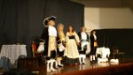
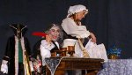

Teatro di Calabria Aroldo Tieri gremito la sera del 26 giugno, in virtù della rappresentazione teatrale tratta da La Locandiera di Carlo Goldoni.
In una commedia senza tempo grazie alla presenza di personaggi modernissimi, si rispolvera l'antagonismo uomo-donna in una gara di astuzia al disamore in cui Mirandolina, nelle veci di "padrona di casa", diventa sirena incantatrice di cuori maschili fragili, mentre il sedicente Cavaliere di Ripafratta incorreggibile misogino cerca in tutti i modi di non cedere alle tentazioni di cuore. In una pièce di comicità il settecento rivive sul palco dell'Auditorium A. Casalinuovo, con il riuscitissimo intento di rievocare un tourner la tête, conditio sine qua, per attingere dalla memoria di quel che è stato l'antesignano del presente. In una zuppa dove i ricordi sono fonte di ricerca del tempo perduto e lo status facti dell'attualità mezzo per poterli omaggiare, il disegno strategico dell'autore resuscita la sua funzione sociale educativa anche ai nostri giorni. Perché anche se viviamo in un'epoca dove patrizi e plebei non esistono più, la turba di maschere grottesche che nella commedia traspare, attraverso l'aristocratico "con esigui denari" Marchese di Forlimpopoli e il ladro di un titolo nobiliare Conte di Albafiorita, rende la finzione nuovamente protagonista e acerrima nemica della vita presente. In questa ottica, in un excursus temporale "il corteggiar superbo" supera i confini spazio temporali per approdare di nuovo nella società odierna, spacciandosi come l'antidoto necessario ad afferrare il più inafferrabile dei sentimenti, quale: l'Amore. Un amore strumentalizzato dai "giochi di parte" dei protagonisti, costruito da un lato per immortalare le lotte di classe sociale, dall'altro per promuovere la nascita di un particolare manifesto del femminismo ante-litteram, che se all'epoca era mezzo per dettare le basi per l'emancipazione femminile, oggi può ancora per certi versi rappresentare il ritratto autentico della donna moderna.
Di un testo abbastanza stratificato, dalla riduzione scenica di Luigi La Rosa e la regia di Aldo Conforto, ne viene fuori un versante che privilegia un giubilare di emozioni dove le atmosfere si muovono a ritmo incalzante in un allestimento che richiama gli archetipi della commedia dell'arte.
In un esame più approfondito, sembrerebbe che la direzione abbia voluto superare le circoscrizioni accademiche scegliendo exploits recitativi figli di una metodica interpretativa più naturalistica, attenta al vero, che impersona i personaggi con giusto merito, preferendoli a quel genere di attore declamatore, stentoreo, impantanato di retorica e prigioniero degli stretti confini della verbosità ampollosa e aulica.
Ne consegue che il cast teatrale ne esce vittorioso dal difficile compito di coinvolgere la platea per tutta la durata della rappresentazione. Di fatto, lo spettacolo bissato di applausi, non ha avuto bisogno di rabbonire i più temuti grognards, dal momento che le congratulazioni non sono state solo prodigate dalla solita claque. Gli attori tutti adeguati nel ruolo, hanno brillato non solo per lo squisito temperamento artistico, ma anche per il fatto di aver palesato una forma d'arte che vive di luce propria e si affida al buon cuore del pubblico. Tra di loro emergono Anna Macrì nelle vesti di Mirandolina e Salvatore Venuto interprete del Cavaliere di Ripafratta. L'attrice si è calata egregiamente nell'interpretazione risultando seducente, misurata a ogni dinamica, dando giusta espressione alla umana austerità del personaggio con tonalità suggestive e arte scenica efficace. L'attore dimostrando di avere un intuito artistico geniale, si supera dando sfoggio, di una mobilità facciale non comune che produce effetti scenici di alto livello. Salvatore Venuto è il caleidoscopio di una eroicizzazione del teatro dove un miscuglio di colori svariati e multiformi si combinano. Un talento esemplare poiché nonostante le ineccepibili doti, riesce a non eccedere rispetto agli altri, serbando al personaggio la coerenza senza creare disquilibri e pompe declamatorie. Quei tipici disquilibri che commettono i "principianti" non riuscendo a contenere le proprie qualità sceniche rispetto alla parte da eseguire in un'ottica di purificazione di ogni intenzione d'effetto. Tutte all'altezza della situazione le interpretazioni del resto della Compagnia, Paolo Formoso nel Conte di Albafiorita, Mariarita Albanese in Fabrizio, il cameriere di locanda. Doppio compito, e doppia prova per il regista Aldo Conforto che con grande padronanza scenica ha assunto i panni del Marchese di Forlimpopoli oltre a curare la direzione della commedia. Una direzione che è un "modo di fare" teatro che armonizza la ricostruzione storica con la riproduzione fotografica della vita quotidiana. Una difesa degli aspetti classici standard del "Bel Teatro", che prescindono dal famigerato Teatro di Varietà, che seppur figlio di ideali di libertà, appare troppo spesso fiacco e anonimo. Il frutto conclusivo di tutto ciò, è la celebrazione di un classico della commedia moderna italiana dove emerge ineluttabilmente la lotta alla viltà opportunistica e utilitaria, un messaggio che dal passato riecheggia giungendo fino a noi per ricordarci che scegliere la sincerità alla menzogna, la libertà al condizionamento, sono alla base per una vita serena.
Questo messaggio viaggia dal passato al presente, grazie all'ottima performance degli attori della Compagnia Teatro di Calabria, che rispecchiando la volontà dell'autore hanno modellato i propri volti per indossare delle maschere a metà. Maschere di una fabbrica difettosa che seppur costruite servendosi dell'inganno, non riescono a coprire le impurità. Maschere trasparenti che anche se indossate lasciano sempre scrutare tutto ciò che c'è sotto.
{kind=link}
{kind=link}
{kind=link}
Si ringraziano gli autori e la redazione di WHIPART.IT